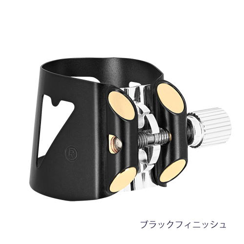
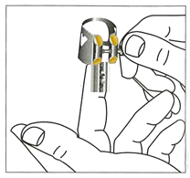

オプティマムリガチャー、リガチャーキャップ
バンドーレン・リガチャー、リガチャーキャップ
バンドーレンのオプティマム・リガチャーを使ったら、もっと多くのリードがあなたの期待どおりの演奏をしてくれることが分かるでしょう。
【オプティマム リガチャーの特徴】
- 卓越したパフォーマンスと信頼性
- 正確ですばやい締めつけ。ユニークなダブル・トラックねじ機構で、リガチャーの両側面を均等に締め付けます。
- 垂直で左右対称の締め付け
- －マウスピースに取り付けたままでも調整が簡単です
- －リードがしっかり固定されます
- ユニークな通気孔つきのキャップが、リードをすばやく乾燥させます
- どんな状況でも調節が簡単です
- 取り替え可能な圧力プレートが3種類あり、これらがサウンドやスタイル、演奏する曲によって合わせることができます。
- マウスピースの回りのカラー部分がリードと接する部分から独立しているので、リードの振動が邪魔されることがありません。

| クラリネット | リガチャー＆プラスチックキャップ | プレッシャー・プレートセット（3種1セット） | ||
|---|---|---|---|---|
| シルバープレート | ピンクゴールドプレート | ブラックフィニッシュ | シルバープレート | |
| B♭ | LC01P | LC01PGP | LC01BP | PP01 |
| E♭ | LC02P | PP01 | ||
| Alto | LC03P | PP01 | ||
| Bass | LC04P | LC04BP | PP04 | |
| B♭ （German System） |
LC05P | PP01 | ||
| サクソフォン | リガチャー＆プラスチックキャップ | プレッシャー・プレートセット（3種1セット） | |
|---|---|---|---|
| ゴールドプレート | ピンクゴールドプレート | ゴールドプレート | |
| Soprano | LC06P | PP06 | |
| Alto | LC07P | LC07PGP | PP06 |
| Tenor (V16 メタルマウスピースを除く） |
LC08P | PP08 | |
| Tenor (V16 メタルマウスピース用） |
LC080P | PP08 | |
| Baritone | LC09P | PP09 | |
| Baritone (V16エボナイトマウスピース用） |
LC090P | PP08 | |
【3種類のプレッシャー・プレート】
クラシックでもジャズの演奏でも、オプティマム・リガチャーの3つの圧力プレートがあなたのスタイルに合わせます。
- プレート1
- 豊かでカラフルな音色が素晴らしい響きを作り出します。リードの繊維伝いに圧力がかかるので、信じられないほど演奏が容易です。アーティキュレーションも素晴らしく楽です。
- プレート2
- スムーズで均一なサウンドを美しく伝えます。コンパクトでまとまった音色を求めるときに理想的です。
- プレート3
- リードの振動が何ものにも干渉されずピュアに伝わります。群を抜く表現力と自由で変化に富むフレキシブルなサウンドが楽しめます。
| プレッシャープレートの交換方法 | ||
|  | ||
| プレートの外し方 | プレートの取り付け方 | プレートの固定の仕方 |
| プレートの端を下方へしっかり押し、ネジを手前方向に回しゆるめます。ネジがゆるみ、プレートは簡単に外せます | プレートを指の腹に乗せ、プレート上に並んだノッチ間にネジがおさまるようにセットして締めます。 | プレートを上方にしっかり押さえることによりネジがプレートを押し上げ、固定されます。 |
マウスピースにリードとリガチャーを装着し、ネジを締めます。